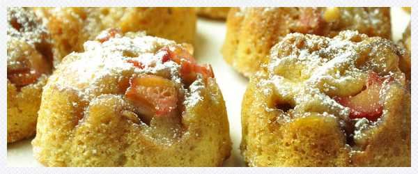

Muffinki karmelowe
Masa owocowa
- szklanka pokrojonych owoców
- 6 łyżek brązowego cukru
- 4 łyżki miękkiego masła
- dwie łyżki posiekanych orzechów włoskich
Ciasto
- 1,5 szklanki mąki
- łyżeczka proszku do pieczenia
- 1/2 szklanki brązowego cukru
- płaska łyżeczka cynamonu
- 1/3 szklanki stopionego masła
- jajko
- szklanka mleka
- skórka otarta z połowy pomarańczy

Piekarnik rozgrzać do 180 st. Silikonowych foremek nie natłuszczać, lekko zniszczone metalowe można nasmarować masłem. Miękkie masło wymieszać z cukrem i rabarbarem. Wyłożyć po łyżce masy na dno foremek muffinkowych. W jednej misce wymieszać mąkę, proszek do pieczenia, sodę, cynamon, cukier i skórkę z pomarańczy, w drugiej jajka, stopione masło i mleko. Połączyć zawartość obu misek i wymieszać. Gdyby było zbyt suche - dolać mleka. Nałożyć porcje ciasta na owocową masę, do wypełnienia foremek. Blaszkę na której stoi forma od muffinek wyłożyć folią aluminiową, karmel może kapać z foremek. Piec ok. 25 minut. Po 3 - 4 minutach od wyjęcia formy z piekarnika podważyć ciastka nożem i przewrócić blaszkę do góry nogami. Muffinki powinny się łatwo odkleić. Ułożyć je na talerzu owocami do góry, ewentualnie posypać dla urody cukrem pudrem.